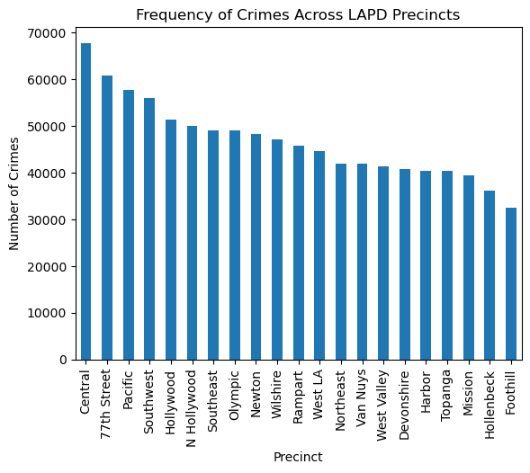
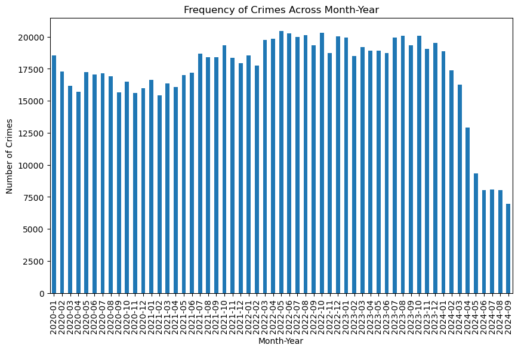

Last Updated: 2024
This project aims to uncover actionable insights into crime trends in Los Angeles County from January 2020 to January 2024. With nearly 1 million publicly available crime records, we build a machine learning model to predict crime types based on spatio-temporal and demographic features.
Our findings are intended to support data-driven municipal policy decisions, improve resource allocation, and enhance public safety.
| Feature | Description |
|---|---|
| Records | ~982,639 total |
| Timespan | Jan 2020 - Jan 2024 |
| Source | Los Angeles Open Data Portal |
| Format | CSV, JSON, GeoJSON |
| Access | API (limited to 1000 records per call) |
| Columns | 28 total |
| Includes | Victim demographics, location, time, weapon type |
Project-Files-main/
├── code.ipynb # Exploratory Data Analysis & Modeling
├── lgb_model.txt.gz # Trained LightGBM model
├── unique_values.json # Metadata on feature values
├── data/
│ ├── crime.csv.gz # Full crime dataset
│ ├── la_crime_data.geojson.gz # Geospatial boundaries
│ ├── mo_codes.pdf # Codebook for crime types
│ ├── subset_ml.csv.gz # Processed dataset for ML
│ └── subset_ml.json.gz # Alternative ML dataset
| Metric | Score |
|---|---|
| Accuracy | 0.72 |
| Precision | 0.73 |
| Recall | 0.72 |
| F1 Score | 0.71 |
| Group | Accuracy | Precision | Recall | F1 |
|---|---|---|---|---|
| White | 0.7233 | 0.7329 | 0.7233 | 0.7137 |
| Black | 0.7021 | 0.7170 | 0.7020 | 0.6907 |
| Hispanic | 0.7184 | 0.7279 | 0.7174 | 0.7055 |
| Other | 0.7542 | 0.7427 | 0.7542 | 0.7249 |
Municipalities can use the model to:
git clone
cd Project-Files-main
jupyter notebook code.ipynb
Unzip the model and datasets
Run the notebook
bash
jupyter notebook code.ipynb

Central precinct shows the highest number of reported crimes, suggesting concentrated hotspots in urban centers.

Crime rates increased steadily post-pandemic and began declining sharply in 2024 — possibly due to new interventions or reporting lags.
Thanks to the Los Angeles Open Data initiative and the communities affected by crime who inspire work toward equitable public safety.